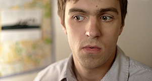
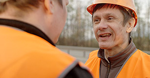
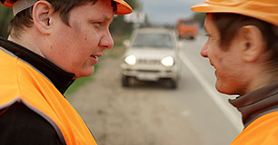
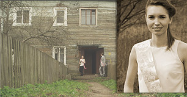
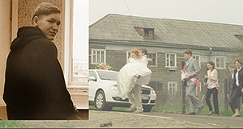
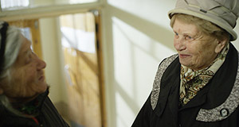
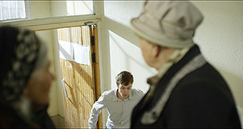
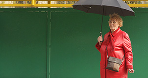

Проект «Неля»
Команда
Участники, съёмочная группа и актёры фильма «Неля».
О фильме «Неля»Участники проекта
Мария Артеменко
режиссер
Высшие курсы кино и телевидения, Всероссийский государственный университет кинематографии имени С.А. Герасимова, мастерская А.И. Богуна: специализация "второй режиссер". Короткий метр: версия фрагмента пьесы Л. Зорина "Варшавская мелодия".
Опыт работы на площадке:
Км/фильм "Девушка и вор", режиссер Юлия Дмитриева: второй режиссер.
Км/фильм "Колокол", режиссер Дмитрий Майоров: второй режиссер.
Км/фильм "Приз на миллион", режиссер Ольга Мишина: ассистент реквизитора, ассистент режиссера, эпизодическая роль водителя.
Км/фильм "Позывной", режиссер Александр Гох: помощник режиссера по актерам.
Мария в facebook.com
Денис Мелконян
сопродюсер
Сопродюсер, эпизодическая роль злого водителя.
Любимые фильмы: "Леон", "Достучаться до небес", "А зори здесь тихие".
Любимые сериалы: "Шулер", "Черные кошки".
Любимые мультфильмы: "Корпорация монстров", "Ну, погоди!", "Чебурашка и крокодил Гена", "Умка".
Любимая книга: "Квест" Б. Акунина.
Денис в facebook.com
Александр Артеменко
сопродюсер
Сопродюсер, эпизодическая роль участника аварии.
Любимые фильмы: Yes Man, Pay It Forward, Into the Wild
Любимые сериалы: Doctor Who, Futurama
Любимые мультфильмы: Tonari no Totoro, Porco Rosso, Tenkuu no Shiro Laputa
Любимая книга: Таинственный Остров, Ж. Верн
Александр в Твиттер
Съемочная группа
Дмитрий Власов
оператор-постановщик
Последние работы Дмитрия:
"Освободители Минин и Пожарский",
"Крючков",
"Украденные коллекции",
"Частные армии",
"Наука привлекательности",
"Секты и лжепророки".
Дмитрий в facebook.com
Олег Демкив
механик камеры, фокус пуллер
Операторское оборудование предоставила компания "kinotechnik.ru".
Ильдар Низаметдинов
ассистент по грипу
БИБ - аренда оборудования
Ильдар в vk.com
Федор Сулейманов
ассистент по свету
Осветитель.
БИБ - аренда оборудования
Федор в vk.com
Максим Синцов
ассистент по свету, спецэффекты
Осветитель.
БИБ - аренда оборудования
Максим в vk.com
Звук
Евгений Петухов
звукорежиссер
Озвучание. Cтудия звукозаписи Лабрадор
Евгений в vk.com
Сергей Подвигин
звукооператор
МКВИ филиал СПБГУКиТ, факультет звукорежиссуры. Звук на площадке.
Звуковое оборудование RentaPhoto.
Сергей в vk.com
Художники
Ольга Антонова
художник-постановщик
Художник. Концепт цветовой, стилевой, отбор и подготовка костюма, постановочные решения.
Ольга в vk.com
Персональная страница Ольги: Художница Ольга Антонова.
Оксана Лавренюк
ассистент по гриму
Визажист, гример.
"Всегда доверяю своей интуиции, первой вспышке, образу и ощущениям,которые возникали читая сценарий! Затем образ сохранется и закрепляется в памяти, фразы из сценария, музыка,добавляют картинке движения и ритма. Всё...теперь можно уткнуться в подушку и уснуть. Утро...тишина в квартире, и на бумаге появляется первый штрих,затем второй....теперь смотрю на лицо Нели".
Оксана в vk.com
Ассистенты
Ольга Мишина
ассистент режиссера
Высшие курсы кино и телевидения, Всероссийский государственный университет кинематографии имени С.А. Герасимова, мастерская А.И. Богуна: специализация "второй режиссер".
Школа Драмы Германа Сидакова.
Второй режиссер, звукооператор. Звук на площадке.
Звуковое оборудование RentaPhoto.
Ольга в vk.com
Лидия Давыдкина
хлопушка
Высшие курсы кино и телевидения, Всероссийский государственный университет кинематографии имени С.А. Герасимова, мастерская А.И. Богуна: специализация "второй режиссер".
Помощник режиссера, реквизит, хлопушка.
"Делать кино - это большое, трудное и удивительное приключение."
Лидия в vk.com
Павел Сухочев
ассистент режиссера по костюму
Дублер главного героя, эпизодическая роль свидетеля на свадьбе, помощник режиссера.
Любимые фильмы: "Нежность к ревущему зверю", "Офицеры", "В бой идут одни старики", "Аполлон-13", комедии Гайдая, "Назад в Будущее"
Любимые сериалы: "Дежурная Аптека", "Наша Russia", "Бандитский петербург", "Солдаты"
Любимые мультфильмы: "Ух ты, говорящая рыба!", "Жил-был пес".
Любимая книга: М. Булгаков "Мастер и Маргарита", А.и Б. Стругацкие "Град обреченный"
Актерский состав

Федор Липатов
главная роль Героя
Курс н.а. РФ В.И. Бочкарева, Театральное училище им. М.С.Щепкина при Малом театре.
Дипломные работы:
У.Шекспир "Ромео и Джульетта"- Синьор Капулетти
Т.Уайлдер "Наш городок"-Джордж Гибс
А.Арбузов "Жестокие игры" -Константинов
Роли в Ведогонь театре:
А.Островский «Бесприданница» - Иван
М.Ремлёзе «Слово как слово» - Мальчик
А.К.Толстой «Царь Федор Иоаннович» - Стремянный
К.Гольдони «Хозяйка гостиницы» - Слуга
А.Горбунов «Снежная принцесса» - Ёжик
А. Чехов «Иванов» - Гаврила
М.Мышанский (по мотивам пьесы С.Семенич) «Гуд бай, супермен!» - Вит
«Капля счастья» (по мотивам О.Уайльда) - Художник
А.Островский «Женитьба Бальзаминова»
Работы в кино:
Эпизод в сериале "Хроники Ломбарда"
Эпизод в фильме "Обмани Если Любишь"
Озвучание для фильма "Семейный дом"
Федор в Facebook
Альбина Бадретдинова
главная роль Нели
Певица, автор песен; в роли Нели дебютировала как актриса.
Альбина в vk.com
Екатерина Бешанова
эпизодическая роль сотрудницы Героя
Актриса театра и кино. Увлекается музыкой, танцами.
Екатерина в vk.com

Александр Гох
эпизодическая роль автодорожника
Актер, режиссер. Московский государственный университет культуры и Искусств: курс Ю. Паршина и В. Кислицина;
ВГИК им. Герасимова, режиссер игрового кино: курс В. Ахадова.
Км/фильм "Позывной", режиссер.
Александр в vk.com
Персональный сайт режиссера: Александр Гох

Алексей Андреев
эпизодическая роль автодорожника
Актер, сценарист. На данный момент - в группе Зомби-сериал "Грешники".
Алексей в vk.com

Гульнара Хазеева
эпизодическая роль свидетельницы на свадьбе
Режиссер, актриса. Московский государственный университет культуры и искусств.
Опыт работы на площадке:
Короткометражный фильм "С Новым годом" - студенктка
Художественный фильм "Во имя любви" - эпизод
Режиссура:
"Алые паруса" Грин А.С.
"Ромео и Джульетта" У. Шекспир
"Бесплодные усилия любви" У. Шекспир
"Тихий Дон" Шолохов М.А.
"Клоп" Маяковский В.В.
"Пигмалион" Шоу Бернард - Фредди
"Двенадцатая ночь" У. Шекспир - Фабиан
"Женская доля" Красногоров В.
Гульнара в Facebook

Руслан Гайнутдинов
групповка "прохожие", "гости на свадьбе"
Актер, фотограф на площадке.
Школа "Класс - Центр" № 686 С.З. Казарновского.
Театр:
Постановка "Любит не любит" - жираф
Центральный Дом ученых, исполнял песню "Старый клен".
"Люблю петь, играть на фортепиано".

Лидия Михайловна
эпизодическая роль соседки

Наталья Ивановна
эпизодическая роль соседки

Лариса Петровна Макаревская
эпизодическая роль незнакомки под зонтом
Сергей
дрессированные голуби